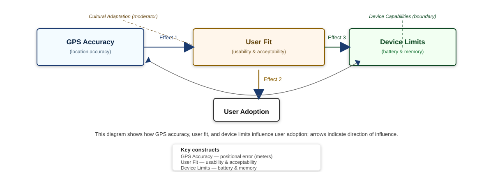

High-contrast variant

Open this file in your browser to verify rendering. If this displays, the SVGs are valid; the VS Code preview issue is likely an editor-specific problem.

If images fail here too, let me know the exact error text or the browser you opened it with; I can then generate PNG fallbacks.